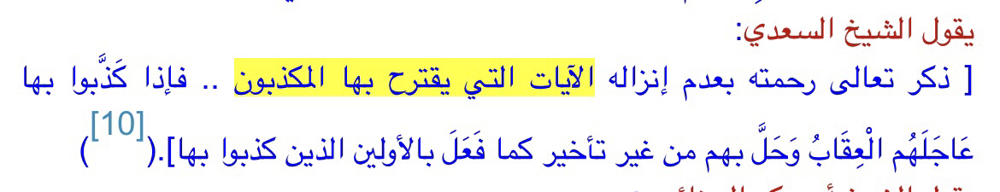

The common objection comes from a verse in the Quran 17:59
Surah Al-Israa (The Night Journey)
17:59
Nothing keeps Us from sending the ˹demanded˺ signs except that they had ˹already˺ been denied by earlier peoples.
And We gave Thamûd the she-camel as a clear sign, but they wrongfully rejected it. We only send the signs as a warning.
Translation: Dr. Mustafa Khattab, the Clear Quran | Meccan
However this verse is on one instance alone and I will prove it
-Source: Tafsir ibn kathir Quran 17:59
Translation: “He mentioned his mercy by not taking down the miracles that the kuffar propose. When they lie about it, the punishment will befall them without delay,
as he did to those who lied to it.”
-Source: Tafsir al-Saadi Taisir al-Karim al-Rahman page number 461 print of al-risala commentating on verse Quran 17:59

Meaningly this verse is only for the miracle of golden if they denied it there is going to be a massive destruction this is why he refused because he knew they
are going to say no
Translation: “
An-Nasa'i also reported this from the Hadith of Jarir. Imam Ahmad recorded that Ibn Abbas said: __**The Quraysh said to the Prophet , "Ask your Lord to turn As-Safa'
into gold and we will believe in you." He said,
«وَتَفْعَلُونَ؟»
(Will you really do that) They said, "Yes." So he asked his Lord, and Jibril came to him and said: "Your Lord conveys His Salam to you and says, If you wish,
I will turn As-Safa' into gold for them, then whoever of them disbelieves after that, will be punished with a torment the like of which has never be seen in creation;
or if you wish, I will open the gates of repentance and mercy for them.__"' He said,
«بَلْ بَابُ التَّوْبَةِ وَالرَّحْمَة»
(Rather the gates of repentance and mercy.)
وَمَا نُرْسِلُ بِالاٌّيَـتِ إِلاَّ تَخْوِيفًا
(And We sent not the signs except to make them afraid (of destruction).) Qatadah said, "Allah makes people afraid with whatever signs He wills, so that they may
learn a lesson and remember and return to Him. We were told that Al-Kufah was shaken at the time of Ibn Masud, who said: O people, your Lord is rebuking you,
so pay heed!"' Similarly, it was reported that Al-Madinah was struck by several earthquakes at the time of Umar bin Al-Khattab. Umar said: "You have changed,
by Allah, and if such a quake were to strike again, I will subject you to such and such."
-Source: Musnad Ahmed 2166
Grade: Sahih (authentic) (Darussalam)
Now lets see his miracles
If you have not already, please go and read the reliability and preservation of the Sunnah section. If you, have you would see how we have plenty of information
surrounding Muhammad ﷺ. Moreover, we know that the sources can be trusted. Now let’s look at some of the material miracles of the Prophet Muhammad ﷺ.
These miracles were witnessed by countless people, Muslim and Non-Muslim. Also, it is important to note that Muhammad ﷺ did what he did with the permission of Allah.
I already know some will say miracles can be used by members of other faiths to try prove theirs. I have produced a separate section on that.
Healing Qatadah’s eye
The learned scholar of the Maghrib, Qadi Iyad, in his Shifa’ ash-Sharif, narrates through an elevated chain of authorities and numerous lines of transmission that Sa‘d b.
Abi Waqqas, the Prophet’s servant and commander, and commander-in-chief of the army of Islam in the time of ‘Umar, the conqueror of Iran, and one of the ten promised
Paradise, said:
“I was at the Noble Prophet’s side during the Battle of Uhud. He shot arrows at the unbelievers until his bow broke. Then he gave arrows to me, telling me to shoot them.
The arrows he gave me were without flights, that is, without the feathers which help them fly. He was ordering me to shoot them, which I did, and they flew like flighted
arrows, hitting the unbelievers’ bodies and piercing them.” [1]
“At that point, Qatada b. Nu‘man was hit in the eye by an arrow; it was struck out of his head, so that it was sitting on the side of his face. God’s Messenger (pbuh)
took the eye in his blessed, healing hand and placed it in its socket; it was healed as though nothing had happened to it and became the better of his two eyes.”
This event became very widely known. A grandson of Qatada, even, once described himself to ‘Umar b. ‘Abd al-‘Aziz as,
“I am the grandson of one who, when God’s Most Noble Messenger placed his eye back in its socket after it had been struck out, it was suddenly healed and became his
best eye.” He said this in verse, introducing himself to ‘Umar in that way. [2]
It is also related through an authentic narration that during the battle known as the Yawm Dhi-Qarad, Abu Qatada was hit in the face by an arrow. God’s Prophet touched
his face with his blessed hand. Abu Qatada said: “I felt no pain at all, nor did the wound fester.” [3]
So, we have accounts through different narrations all authentic that this event happened. Muhammad ﷺ thanks to Allah healed the eye of Qatadah. People witnessed this
too most notably Qatadah himself. I ask myself why would he or anyone make this up? It doesn’t make sense for Qatadah to make this up as there were many people at Uhud
many witnesses if it did not happen then he would be called and labelled a liar.
Flow of water
Of the miracles of Muhammad ﷺ , God’s blessing and peace be upon him, when he was at Hudaibiyah with his companions in the sixth year of the Hijra, was the flow of
the water of the well.
There was a well of water in Hudaibiyah whose water was drainaged. Because of watering, not a single glass of water remained in it and the people of that town which
counted about one thousand and four hundred men feared the thirst and complained their problem to the Prophet, God’s blessing and peace be upon him.
The Prophet ﷺ came and sat on the edge of the well and called for water, Some water was presented to him, he rinsed out his mouth out of the water and then
he discharged the water from his mouth into the well and soon the well was filled with water.
The people began drinking and filling their vessels and they irrigated their plants. As we have mentioned, they were about one thousand and four hundred men and
they were the people of al-Radwan pledge of allegiance whom God was pleased with. God, the Great and Almighty, revealed the following verse from sura of Fat-h or Victory,
“God’s good pleasure was on the Believers when they swore fealty to thee under the tree he knew what was in their hearts, and He sent down tranquillity to them; and He rewarded
them with a speedy victory”[4]
“Along with the apostle of Allah, we were in a place called Zawra with about three hundred companions. He ordered us to make wudu for the afternoon (asr) prayer but we
could not find any water. He ordered us to find a little water; we found and brought it to Him. He dipped his blessed hands into this water. I saw that water was flowing
from his fingers like a fountain. Then, three hundred people who were there came and made wudu and used that water for their needs”.[5]
This is a miracle which was occurred in Buwat Expedition. This is narrated in authentic hadith sources like Bukhari and Muslim. Jabir narrates.
“The Apostle of Allah ordered His companions, “Tell them to make wudu”. However, the companions informed Him that there was no any water. The Apostle of Allah (PBUH)
said to them “Find me a little water”. We brought him a little water. Then he put his hand over that little water and recited something.
I had no idea about what he recited. Then, he said: “Bring me the big water reservoir of the caravan.” They brought it to me and I put it in front of the Apostle of Allah.
He put his hand into that and opened his fingers. I was pouring that little water onto his blessed hand. I saw that too much water flew from his fingers and the water reservoir was full.
I called those who needed water. All of them came, made wudu and drank from it. And I said to him “There is no one left.” The Apostle of Allah raised his hand;
that water reservoir remained full.”[6]
This clear miracle of the Prophet Muhammad (PUBH) is mutawatir manawi. That is, it can be said that this miracle has reached the present day with a chain of riwayah
about which there is no room for doubt because, as Jabir had a duty while this miracle occurred, the first right of narration belongs to him. He was narrating and
declaring this on behalf of all other companions because the person who was serving was Jabir; thus narrating this riwayah is his right. Ibn Mas’ud said, about the
same miracle, “I saw that water was flowing from the fingers of the prophet Muhammad (PBUH) like a fountain.”[7]. So is it possible for them not to have witnessed it
when a community of major companions such as Anas, Jabir and Ibn Mas’ud said “I witnessed”
So again, you have multiple eyewitnesses to this event. Many people saw the Prophet do this and it has reached us today through multiple reports and remember we know
the names of these eyewitnesses too. Is it likely that all these people made this miracle up? No, it simply can’t be true due to how many reports we have.
These are not anonymous too we know about these people and if you have gone through the reliability and preservation of the Sunnah section you will know this already.
Moon Split
The polytheists of Makkah challenged the prophet on different occasions and one such event is the splitting of the Moon. We have countless authentic hadith from
eye-witnesses who were there and saw with their own two eyes that the moon was split in too two and then was put back together again.
Now this event happened early on in his Prophetic career. Assume Muhammad ﷺ is an impostor why would he out of all the things he could try and perform as miracle
choose to pick something so obscure and profound as the splitting of the moon. It just does not make any sense at all.
Thanks to Allah Muhammad ﷺ split the moon. Let’s have a look at some reports.
“During the lifetime of the Prophet (ﷺ) the moon was split into two parts and on that the Prophet (ﷺ) said, “Bear witness (to thus).”[8] – Narrated Abdullah Ibn Masuud
“That the Meccan people requested Allah’s Messenger (ﷺ) to show them a miracle, and so he showed them the splitting of the moon.”[9]– Narrated Anas
“The moon was split during the time of the Messenger of Allah (ﷺ). So the Messenger of Allah (ﷺ) said: ‘Bear witness.'”[10] – Narrated Ibn Umar
Those are some Muslim’s who witnessed it you also have Ibn Abbas, Abu Ma’mar. How about some Non-Muslim’s?
from his father who said: “The moon was split during the time of the Messenger of Allah (ﷺ) until it became as two sections, one above this mountain and one above
that mountain. So they said: ‘Muhammad has cast a spell upon us.’ Some of them said: ‘If he could cast a spell upon us, he can not cast a spell upon all of the people.
’[11]– Narrated Jubair Bin Mut’im
Jubair did convert to Islam later but at the time of the splitting of the moon he was a Non-Muslim.
The above is from Al Bidayah wan Nihayah by Ibn Kathir pg 356 and it list’s non-Muslims who witnessed this.
Some Non-Muslims which are in Arabic above are below written out for you. (apologies I could not find it in English)
Those of you who can read Arabic will be able to list out their names.
The above is from al bidayah wan nihayah by Ibn Kathir pg 356 and it list’s non-Muslims who witnessed this.
Some Non-Muslims which are in Arabic above are below written out for you.
Al-Walid Ibn Mughirah
Abu Jahl (Amr Ibn Hisham)
A’as ibn Wa’il
Al Aswad Ibn Yagouth
Al Asad Ibn Mutalib
Zam’aa Ibn Aswad
Wal Nadr Ibn Harith
I appreciate that these names will not mean anything to you as most of you may not know who they are. But they are examples of Non-Muslim
eyewitnesses to the splitting of the moon. Some of these Non-Muslim’s converted to Islam too later on in their lives. Why would they convert if the moon
split never happened?
Nevertheless, you have the names of the people as well authentic reports and these people testify themselves that the moon did indeed split.
These were the enemies of the Prophet. Yet they testified that the moon did split. Why would they do that when they hated Muhammad ﷺ especially
Abu Jahl and Al-Walid Ibn Mughirah. It does not make any sense to me. The Non-Muslims accepted the moon split but the reaction of the non-Muslim’s
was that Muhammad ﷺ performed magic.
“The Hour has drawn near and the moon was split ˹in two˺. Yet, whenever they see a sign, they turn away saying, “Same old magic!” – Surah Al-Qamar (chapter 54) verse 1 and 2.
The Meccan’s were sceptical so they wondered if others outside Makkah (Trade Caravans) saw the Moon split. Qadi Ayyad in his book Shifa’ ash-Sharif
makes note of how the enemies of the Prophet asked these caravan owners who came back if they saw the Moon split and they said yes.
I apologise that the above is in Arabic I could not find it in English anywhere. This is from Ash Shifa by Qadi Iyyad
Why did the people outside of Makkah testify too it happening? They had no clue that it was going to happen yet they testified when asked in front of the enemies of
the Prophet that the moon did in fact split. So, you have eye witnesses in Makkah who saw it both Muslim and Non-Muslim and you also have caravan traders too.
So, there is overwhelming accounts that this event actually happened. Now people have tried to raise objections to this and I have responded to such objections below.
Addressing Objections to the splitting of the moon
Now people may object to this and say NASA have said the moon did not split. My response would be could God split the moon and then put it back together again like it
never happened? The answer is…YES. Also, science changes what if NASA invest a lot of money into researching the moon and find evidence that it did split?
What would you do then? You would still reject it.
If Christians try object, I would simply say, why are you ignoring miracles and acting like an atheist when you yourself believe in miracles? You believe in many
things that science objects such as the sun standing still for a day. I do not care if it happened way before the splitting of the moon it is the same principle
be consistent.
Another thing people try to object too is the lack of external sources. People may object and say why isn’t there any source outside of Arabia at the time such as
by Romans and Persians. My response would be:
There is no outside sources (nothing from Iraq or Jerusalem) yet. What if some get found?
The Romans and Persians weren’t expecting the Moon to be split. This is not like today where scientists can predict the weather or the shape of the moon a
couple of days in advance.
When the moon was split there is no reason to assume that it happened for a long period of time rather it was short. How short? Allah knows best.
It happened at night. People sleep at night. People find this response silly, why though? As stated, they weren’t expecting it, it was just like any other
night for them and if someone did see it and it was short then they would likely think it is their mind messing with them.
People such as Al-Qadi Abd al-Jabbar a theologian in the 10th and 11th century who believed the moon split was just for the Arabs alone so naturally Romans
and Persians would not have seen it since they were not Arabs.
In short there is breadth of sources from hadith from Muslims and Non-Muslims. Some Muslim witnesses were initially non-Muslim but the splitting of the moon
caused them to convert. These reports are authentic too. Why would they convert to Islam if the moon never split? The other objection critics can have is to
reject all these sahih hadith but that would be silly and hypocritical since they appeal to sahih hadiths to try attack Islam.